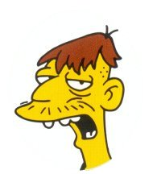

Cletus Spuckler
 De: La Frikipedia, la enciclopedia extremadamente seria.
De: La Frikipedia, la enciclopedia extremadamente seria.
De la serie grandes personajes:
Pueblerino, Esmirriao con acento Sureño
| Nacimiento
|
Año 1974 de la quinta era de los hombres
|
| Muerte
|
Año en el que los pinguinos coman alpargatas
|
| Ocupación
|
Conductor de fraganetas
|
| Nacionalidad
|
U.S.A
|
| Malo o bueno
|
TONTO
|
| Atentados contra la humanidad
|
Contribuir a que Sprigfield sea el lugar mas indeseable de América
|
| Religión
|
No sabe que es eso
|
| Notas
|
Cletus se siente amenazado cuando le miran a los ojos.(En el fondo es buena gente).
|
Cletus Spucker, el mejor y mas grandioso personaje de los Otto, nació en las afueras de Springfield, y hoy en día vive en un barrio de caravanas (es vecino de Moe) aunque como todos sabemos, esto no siempre es así ya que la geografía y vida de los personajes de los Simpsons cambia en cada capítulo y no sigue ninguna lógica.
Definición Fisonómica
Cletus es un hombre de mediana estatura tonto, feo, sucio, pobre, deficiente mental, sin ningún atractivo físico, inculto, y hay quienes afirman que intenta imitar al carterista Snake.Cuando tiene tiempo libre le gusta salir a piscar frijoles con su abuela pero según él son Chicharos.
Conyuge
Cletus (Que en español sería Anacleto) esta casado con una prima hermana (Brandine) o algo por el estilo, con la que tiene 30 hijos.
Datos de importancia
Cletus al ver a
IP anónima - Cletus posee una camioneta vieja y sucia y destartalada con la que se supone trabaja.
- En dicha camioneta llevo a Homer cuando marge le rebano el Dedo
- Su trabajo consiste en ir a buscar restos de comida animales muertos, fiambres o comida caducada con la que alimenta a su Familia y crear películas de Disney.
- Cletus no fue al Colegio y no sabe leyer ni hescribir.
- En un capítulo de los Simpsons Cletus y Brandine fueron padres adoptivos de Bart y Lisa.
- Nadie sabe como coño es así, pero... ¡¡¡¡Cletus es miembro de un jurado!!!
- Cletus puede ver el futuro.
- Es capaz de tomar mercurio y no morirse

Uno de los hijos de Cletus
 Cletus leyendo la frikipedia
Los Frikis hijos de Cletus

Sistema operativo de Cletus
Sus hijos son:
Frases famosas
- "Me he roto el güeso del ano"
- "Brandine ¡!!!!"
- Se como se siente, a mi una vez una gallina me gano al 3 en ralla"
- "No se pué, vamoh que no se pué."
- "Es usté un estúpio pueblerino de ciudah"
- "me bebí lo de dentro del termometro y ahora no me acuerdo de na´, pero tallo en madera to´lo que veo"
- "¡Hey mamá, mira a esa niña,tiene el pelo de punta!"
- "Brandine: Cletus ¿porqué has tenido que aparcar al lado de mis viejos? Cletus: ¡porque también son los míos!
- "Pero que bonito es lo bonito!"
- Homer pita falta, y Cletus para recriminar dice: "Señor he engendrao un zopenco, un burro, un no se que, un niño perro, y una cosa con cara humana con cuerpo de pez al que llamamos Kevin, pero mis hijos no juegan sucio"
- "MA! se metio otro pejelagarto!"
Y otras muchas frases ininteligibles que no hemos sido capaces de descifrar...
Cosas importantes que ha hecho
- Trabajar con Disney
- Vive alejado de Springfield
- Le hizo favores personales a su cerdo
- Es tan tonto que se presentó a un concurso de tontos y quedó último.
- Perdió en el ajedrez con una gallina
Aficiones
- Quemar moscas
- Explotar a sus hijos, incluido tú, IP anónima en la divertidísima tarea de trozear pájaros
- Observar la fauna de la zona(su mujer)
- Cazar animales muertos(no requiere dificultad para ningun ser humano, exceptuando al Haze, bueno pero...¿el Haze es humano?)
- Comprarse escopetas Winchester para acabar con la vida de sus 30 hijos y su mujer, y asi quedarse con la caravana para el solo... es muy listo en verdad....
Alimentación
- moho
- gatos muertos(de la loca de los gatos)
- Bolsitas de catsup
- óxido
- planchas de acero
- discos duros
- granadas de ácido
mierda suciedad- Lo de adentro del termómetro
- Principalmente la comida que le da a los cerdos(bueno,para tanto no)
- Pañuelos Elite
- Pedobears de peluches
- Molotovs
Autor(es):
- Krusher
- Fordus
- Frikiman
- Azulejos
- El Sevillano
- Move Zig
- Korpitz 666
- Link t79
- NRikee
- Darth jedi
Frikipedia 2005-2016, Licencia
GFDL 1.2 - Extraído por FrikiLeaks